文件系统-01初识文件系统
文件系统
磁盘的格式化与挂载
简化的Linux文件系统磁盘布局结构图如下：
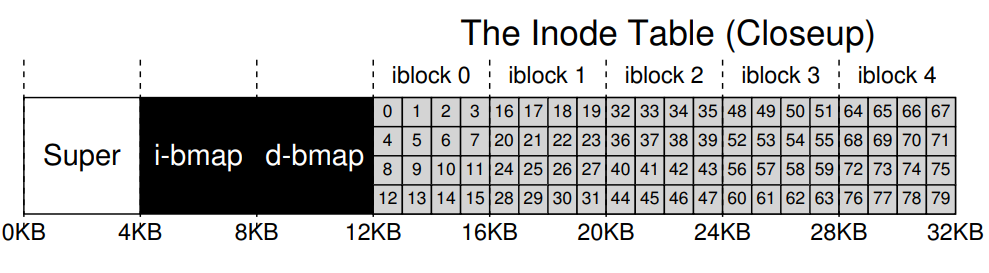虚拟机操作实验
首先我们通过添加一个磁盘文件
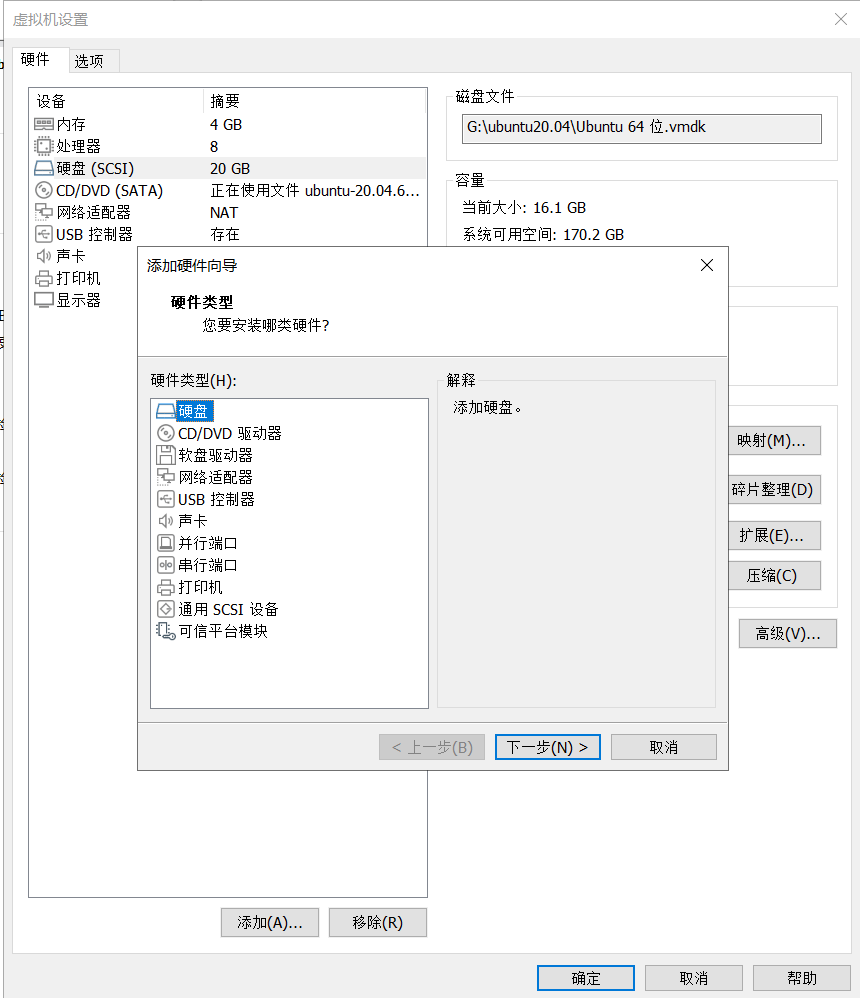选择添加硬盘
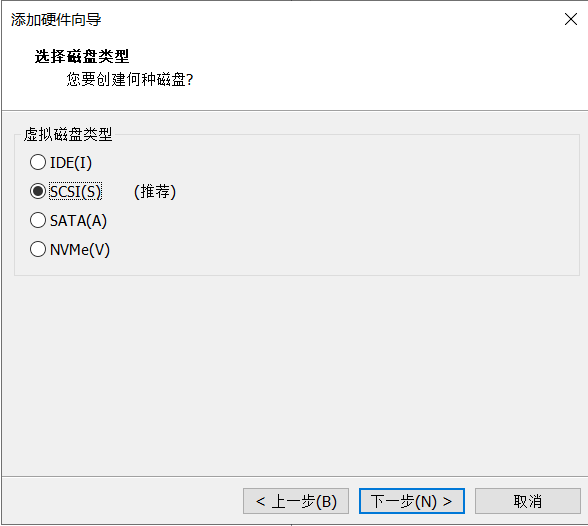
选择SCSI(S)类型的磁盘
选择创建新的虚拟磁盘
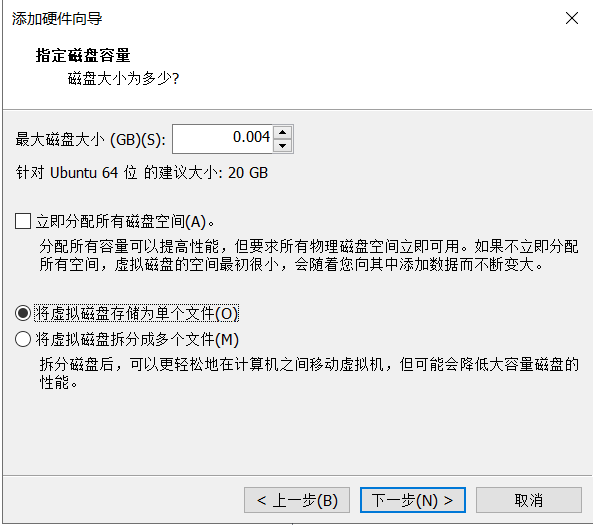
设定磁盘大小为4MB，并且将虚拟磁盘存储为单个文件
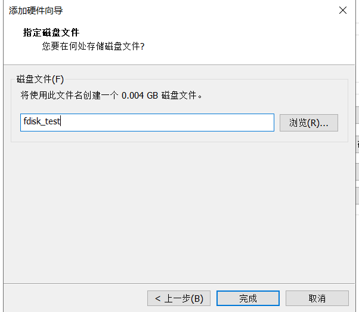
点击完成
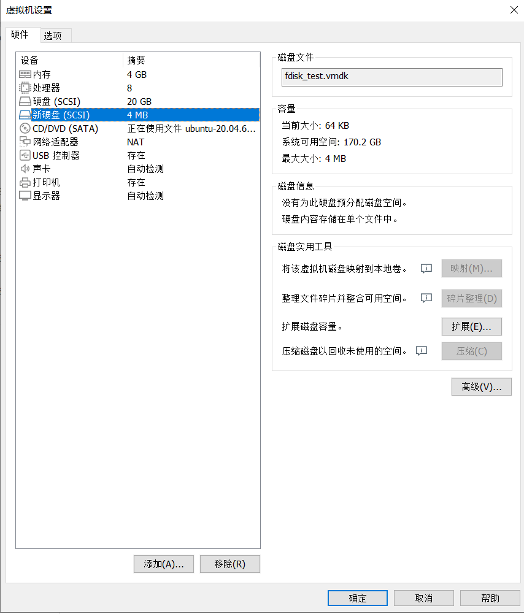
我们打开虚拟机终端，切换到管理员模式
1
su
查看系统有哪些磁盘
1
fdisk -l
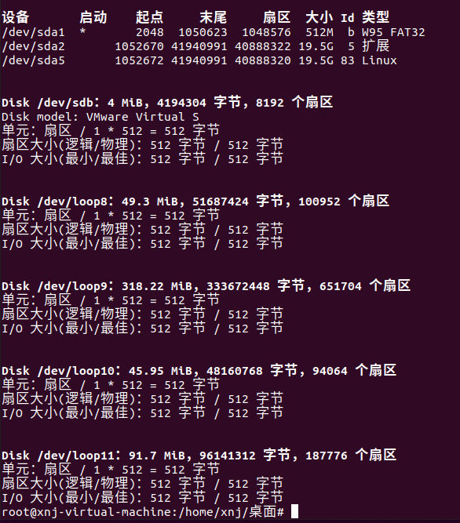
我们可以看到我们添加的新磁盘为
/dev/sdb，接下来我们开始格式化添加的磁盘，我们将磁盘格式化为minix格式1
mkfs.minix /dev/sdb
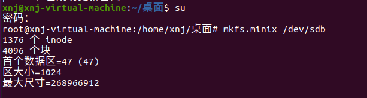
根据上图我们可以看出格式化之后文件系统创建了
- 创建了 1376 个 inode（索引节点）
- 创建了 1376 个 inode（索引节点）。
inode数量 ≈ 磁盘大小 / 预期平均文件大小
此处4MB / 1376 ≈ 3KB/文件，适合存储大量小文件。
- 文件系统被划分为 4096 个数据块
- 块大小：根据后续参数计算为 1024 字节（1KB）（见下方推导）。
- 总磁盘空间：
4096 块 × 1024 字节/块 = 4,194,304 字节 = 4MB，符合设定。
- 文件系统的块大小（block size） 为 1024 字节（1KB）
- 读写操作的最小单位是 1KB。
- 小块大小适合存储大量小文件，减少空间浪费（外部碎片）。
最大尺寸=268966912- 文件系统支持的最大理论容量（单位：字节）。
- 当前磁盘仅为 4MB，表明该文件系统设计支持扩容至 256MB。
- 创建了 1376 个 inode（索引节点）
我们现在将格式化后的文件内容导出来，进行进一步的分析
1
hexdump -C /dev/sdb > minix_origin.data
可以看到
minix_origin.data文件中的内容为：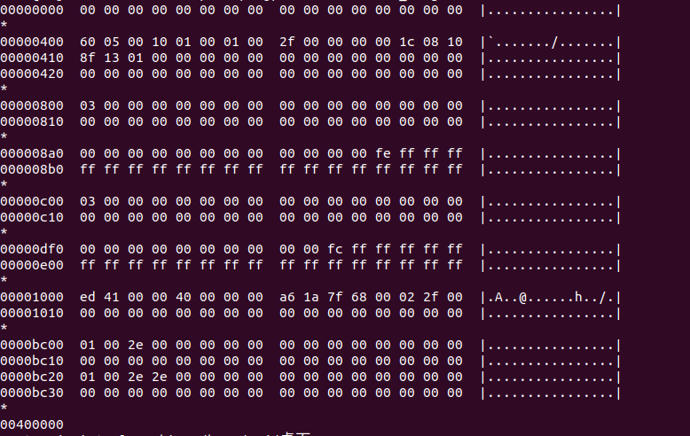
1
2
3
4
5
6
7
8
9
10
11
12
13
14
15
16
17
18
19
20
21
22
23
24
25
26
270000000 00 00 00 00 00 00 00 00 00 00 00 00 00 00 00 00 |................|
*
00000400 60 05 00 10 01 00 01 00 2f 00 00 00 00 1c 08 10 |`......./.......|
00000410 8f 13 01 00 00 00 00 00 00 00 00 00 00 00 00 00 |................|
00000420 00 00 00 00 00 00 00 00 00 00 00 00 00 00 00 00 |................|
*
00000800 03 00 00 00 00 00 00 00 00 00 00 00 00 00 00 00 |................|
00000810 00 00 00 00 00 00 00 00 00 00 00 00 00 00 00 00 |................|
*
000008a0 00 00 00 00 00 00 00 00 00 00 00 00 fe ff ff ff |................|
000008b0 ff ff ff ff ff ff ff ff ff ff ff ff ff ff ff ff |................|
*
00000c00 03 00 00 00 00 00 00 00 00 00 00 00 00 00 00 00 |................|
00000c10 00 00 00 00 00 00 00 00 00 00 00 00 00 00 00 00 |................|
*
00000df0 00 00 00 00 00 00 00 00 00 00 fc ff ff ff ff ff |................|
00000e00 ff ff ff ff ff ff ff ff ff ff ff ff ff ff ff ff |................|
*
00001000 ed 41 00 00 40 00 00 00 a6 1a 7f 68 00 02 2f 00 |.A..@......h../.|
00001010 00 00 00 00 00 00 00 00 00 00 00 00 00 00 00 00 |................|
*
0000bc00 01 00 2e 00 00 00 00 00 00 00 00 00 00 00 00 00 |................|
0000bc10 00 00 00 00 00 00 00 00 00 00 00 00 00 00 00 00 |................|
0000bc20 01 00 2e 2e 00 00 00 00 00 00 00 00 00 00 00 00 |................|
0000bc30 00 00 00 00 00 00 00 00 00 00 00 00 00 00 00 00 |................|
*
00400000接下来我们开始创建文件，并逐步分析
1
2
3
4
5
6
7
8mount /dev/sdb /mnt #挂载文件
cd /mnt
touch test.c
echo "hello world" > test.c
mkdir head
cd head
touch head.h
echo "headheadhead" > head.h这之后文件的结构树应该是：
1
2
3
4
5
6
7root@xnj-virtual-machine:/mnt# tree
.
├── head
│ └── head.h
└── test.c
1 directory, 2 files我们再次将磁盘的内容拷贝出来
1
2umount /mnt #取消挂载文件
hexdump -C /dev/sdb > minix_make.data进行查看：
1
2
3
4
5
6
7
8
9
10
11
12
13
14
15
16
17
18
19
20
21
22
23
24
25
26
27
28
29
30
31
32
33
34
35
36
37
38
39
40
41
42
43
44
45
46
47
48
49
50
5100000000 00 00 00 00 00 00 00 00 00 00 00 00 00 00 00 00 |................|
*
00000400 60 05 00 10 01 00 01 00 2f 00 00 00 00 1c 08 10 |`......./.......|
00000410 8f 13 01 00 00 00 00 00 00 00 00 00 00 00 00 00 |................|
00000420 00 00 00 00 00 00 00 00 00 00 00 00 00 00 00 00 |................|
*
00000800 1f 00 00 00 00 00 00 00 00 00 00 00 00 00 00 00 |................|
00000810 00 00 00 00 00 00 00 00 00 00 00 00 00 00 00 00 |................|
*
000008a0 00 00 00 00 00 00 00 00 00 00 00 00 fe ff ff ff |................|
000008b0 ff ff ff ff ff ff ff ff ff ff ff ff ff ff ff ff |................|
*
00000c00 1f 00 00 00 00 00 00 00 00 00 00 00 00 00 00 00 |................|
00000c10 00 00 00 00 00 00 00 00 00 00 00 00 00 00 00 00 |................|
*
00000df0 00 00 00 00 00 00 00 00 00 00 fc ff ff ff ff ff |................|
00000e00 ff ff ff ff ff ff ff ff ff ff ff ff ff ff ff ff |................|
*
00001000 ed 41 00 00 80 00 00 00 a1 7f 7f 68 00 03 2f 00 |.A.........h../.|
00001010 00 00 00 00 00 00 00 00 00 00 00 00 00 00 00 00 |................|
00001020 a4 81 00 00 0c 00 00 00 8c 7f 7f 68 00 01 30 00 |...........h..0.|
00001030 00 00 00 00 00 00 00 00 00 00 00 00 00 00 00 00 |................|
00001040 ed 41 00 00 60 00 00 00 b0 7f 7f 68 00 02 31 00 |.A..`......h..1.|
00001050 00 00 00 00 00 00 00 00 00 00 00 00 00 00 00 00 |................|
00001060 a4 81 00 00 0d 00 00 00 c4 7f 7f 68 00 01 32 00 |...........h..2.|
00001070 00 00 00 00 00 00 00 00 00 00 00 00 00 00 00 00 |................|
*
0000bc00 01 00 2e 00 00 00 00 00 00 00 00 00 00 00 00 00 |................|
0000bc10 00 00 00 00 00 00 00 00 00 00 00 00 00 00 00 00 |................|
0000bc20 01 00 2e 2e 00 00 00 00 00 00 00 00 00 00 00 00 |................|
0000bc30 00 00 00 00 00 00 00 00 00 00 00 00 00 00 00 00 |................|
0000bc40 02 00 74 65 73 74 2e 63 00 00 00 00 00 00 00 00 |..test.c........|
0000bc50 00 00 00 00 00 00 00 00 00 00 00 00 00 00 00 00 |................|
0000bc60 03 00 68 65 61 64 00 00 00 00 00 00 00 00 00 00 |..head..........|
0000bc70 00 00 00 00 00 00 00 00 00 00 00 00 00 00 00 00 |................|
*
0000c000 68 65 6c 6c 6f 20 77 6f 72 6c 64 0a 00 00 00 00 |hello world.....|
0000c010 00 00 00 00 00 00 00 00 00 00 00 00 00 00 00 00 |................|
*
0000c400 03 00 2e 00 00 00 00 00 00 00 00 00 00 00 00 00 |................|
0000c410 00 00 00 00 00 00 00 00 00 00 00 00 00 00 00 00 |................|
0000c420 01 00 2e 2e 00 00 00 00 00 00 00 00 00 00 00 00 |................|
0000c430 00 00 00 00 00 00 00 00 00 00 00 00 00 00 00 00 |................|
0000c440 04 00 68 65 61 64 2e 68 00 00 00 00 00 00 00 00 |..head.h........|
0000c450 00 00 00 00 00 00 00 00 00 00 00 00 00 00 00 00 |................|
*
0000c800 68 65 61 64 68 65 61 64 68 65 61 64 0a 00 00 00 |headheadhead....|
0000c810 00 00 00 00 00 00 00 00 00 00 00 00 00 00 00 00 |................|
*
00400000
super_block
Super (Superblock - 超级块):
- 作用： 文件系统的“总控信息中心”。存储描述整个文件系统的全局信息，如：
- 文件系统类型 (e.g., ext4, XFS)
- 总大小、总块数
- 空闲块数、空闲
inode数 inode表的位置和大小- 块大小 (图中底部暗示为4KB)
- 文件系统状态 (是否干净卸载)
- 特点： 极其关键，损坏通常导致文件系统无法挂载。常有备份副本。
我们打开linux5.15版本的minix_fs.h文件minix_fs.h - include/uapi/linux/minix_fs.h - Linux source code v5.15 - Bootlin Elixir Cross Referencer，可以查看到minix_super_block结构体的内容如下：
1 | /* |
因为超级块在格式化生成后就不会进行更改，我们可以通过实验的数据可以查看到超级块的内容为：
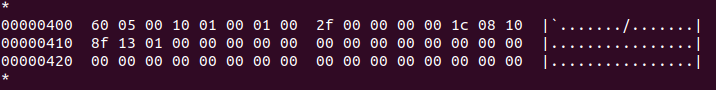
超级块为小端存储，小端存储的解释可以参考文章最后一章节
根据结构体我们将图中的变量大小依次解读，注释后结构体变量的内容如下所示：
1 | struct minix_super_block { |
对比我们格式化之后系统返回的信息可以知道超级块存储了磁盘的全局信息
i-bmap
i-bmap (Inode Bitmap - Inode位图):
- 作用： 一个简单的位数组（
bit array），每个比特(bit)对应inode表中的一个inode条目。- 比特值
0表示对应的inode是空闲的。 - 比特值
1表示对应的inode已被使用（分配给某个文件/目录）。
- 比特值
- 特点： 文件系统创建新文件/目录时，快速扫描此位图寻找空闲
inode号。高效管理inode分配状态。
先看inode bitmap数据，磁盘刚刚格式化后的数据如下：
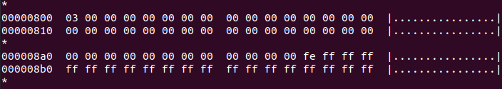
1 | 00000800 1f 00 00 00 00 00 00 00 00 00 00 00 00 00 00 00 |................| |
磁盘格式化之后一共1376个inode。所以在inode bitmap要用1376个bit位来表示这些inode
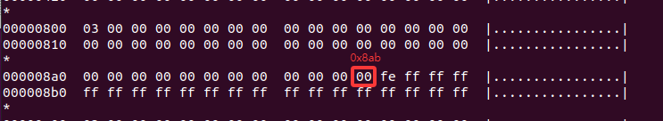
从地址0x800到0x8ab，一共有172个字节，表示172*8=1376个inode.inode bitmap地址的开头第一个字节0x03→0b00000011,第一个位图不使用，但是置为1，因此算上0x8ac地址上的0xFE上的最后一个bit位，正好是1376个bit位。
inode
The Inode Table (Closeup) - Inode 表
- 作用： 这是文件系统的核心数据结构之一。==每个文件或目录在inode表中都有一个唯一的inode条目==。这个条目存储了文件的元数据（metadata），例如：
- 文件大小
- 文件所有者（UID）和所属组（GID）
- 文件权限（读、写、执行）
- 文件创建、修改、访问时间戳
- 最关键的是：指向存储文件实际数据的数据块（data blocks）的指针。
- 图中的表示 (iblock 0 - iblock 4)：
- 这里显示了文件系统保留的前5个磁盘块专门用于存储inode表 (
iblock即 “inode block”)。 - 每个
iblock可以容纳一定数量的inode结构体。图中没有展示单个inode内部的细节（如直接指针、间接指针等），而是强调了inode表本身占据的物理位置（块0-4）。
- 这里显示了文件系统保留的前5个磁盘块专门用于存储inode表 (
- 特点：
- 固定位置/大小： 通常在文件系统创建时确定大小和位置（常在超级块之后）。
- 索引作用： 文件名存储在目录的数据块中，目录条目将文件名映射到其对应的inode号。通过inode号即可在inode表中找到该文件的元数据和数据块指针。
- 不存储文件名。
我们打开linux5.15版本的minix_fs.h文件minix_fs.h - include/uapi/linux/minix_fs.h - Linux source code v5.15 - Bootlin Elixir Cross Referencer，可以查看到minix_inode结构体的内容如下：
1 | struct minix_inode { |
当用户使用shell命令touch或者open系统调用创建一个文件时，文件系统中会使用唯一的一个inode来标识这个文件的相关信息。
所有文件的inode都保存在磁盘上的inode table上，文件系统使用inode bitmap来记录inode table中inode的使用情况。
磁盘格式化后的
inode table内容如下：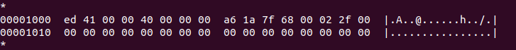
结构体变量如下：
1
2
3
4
5
6
7
8
9
10
11
12
13
14
15
16
17
18struct minix_inode {
__u16 i_mode;//权限 0x41ed,040755,目录文件rwxr-xr-X
//小端值：0x41ed（41为高位，ed为低位）
//二进制：0100 0001 1110 1101
//解析：
//文件类型（高 4 位）：0100 → 目录（0x4000）
//权限位（低 12 位）：0001 1110 1101 = 0755（八进制）
//用户： rwx (111)
//组： r-x (101)
//其他： r-x (101)
//结论：目录文件，权限 rwxr-xr-x
__u16 i_uid;//文件所属用户 0x0000,用户为root
__u32 i_size;//文件大小 0x00000040,文件大小，64字节：
__u32 i_time;//文件时间戳 0x687f1aa6
__u8 i_gid;//文件所属组 0x00,属于用户组：root
__u8 i_nlinks;//文件的引用计数 0x02 父目录和当前目录都指向根目录 硬链接数=2（.和..）
__u16 i_zone[9];//文件数据存储在data block上的位置 0x002f,47,数据在第47个data block数据块
};我们找到第47个数据块为：
1
2
3
40000bc00 01 00 2e 00 00 00 00 00 00 00 00 00 00 00 00 00 |................|
0000bc10 00 00 00 00 00 00 00 00 00 00 00 00 00 00 00 00 |................|
0000bc20 01 00 2e 2e 00 00 00 00 00 00 00 00 00 00 00 00 |................|
0000bc30 00 00 00 00 00 00 00 00 00 00 00 00 00 00 00 00 |................|分析内容：
地址
0000bc00处的数据：1
20000bc00 01 00 2e 00 00 00 00 00 → inode=1, name="."
0000bc20 01 00 2e 2e 00 00 00 00 → inode=1, name=".."按
struct minix_dir_entry解析：- 条目1：
inode=0x0001（==根目录自身==）name="."（当前目录）
- 条目2：
inode=0x0001（==根目录的父目录仍是自身==）name=".."（父目录）
目录项结构：
1
2
3
4struct minix_dir_entry {
__u16 inode; // 文件/目录对应的 inode 号
char name[0]; // 文件名（变长数组，实际存储在后方）
};验证：
- 每个目录项占 16 字节（2+14）。
- 总大小=64字节（与 inode 的
i_size=64一致）。
- 条目1：
当我们在磁盘中生成文件之后文件的
inode_table块内容如下：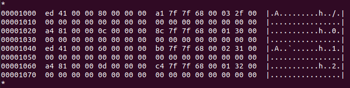
1
2
3
4
5
6
7
8
900001000 ed 41 00 00 80 00 00 00 a1 7f 7f 68 00 03 2f 00 |.A.........h../.|
00001010 00 00 00 00 00 00 00 00 00 00 00 00 00 00 00 00 |................|
00001020 a4 81 00 00 0c 00 00 00 8c 7f 7f 68 00 01 30 00 |...........h..0.|
00001030 00 00 00 00 00 00 00 00 00 00 00 00 00 00 00 00 |................|
00001040 ed 41 00 00 60 00 00 00 b0 7f 7f 68 00 02 31 00 |.A..`......h..1.|
00001050 00 00 00 00 00 00 00 00 00 00 00 00 00 00 00 00 |................|
00001060 a4 81 00 00 0d 00 00 00 c4 7f 7f 68 00 01 32 00 |...........h..2.|
00001070 00 00 00 00 00 00 00 00 00 00 00 00 00 00 00 00 |................|我们进行了三个操作，生成的文件结构如下：
1
2
3
4
5
6
7root@xnj-virtual-machine:/mnt# tree
.
├── head
│ └── head.h
└── test.c
1 directory, 2 files现在进行逐个分析：
第一个：
1
00001000 ed 41 00 00 80 00 00 00 a1 7f 7f 68 00 03 2f 00 |.A.........h../.|
变量 内存字节 十六进制值 含义 i_mode41 ed0x41ed权限 rw-r-xr-x（目录文件）i_uid00 000x0000所属用户 rooti_size80 00 00 000x00000080文件大小 128 字节i_timea1 7f 7f 680x687f7fa1时间戳 i_gid000x00所属用户组 rooti_nlinks030x03引用计数 i_zone[9]2f 000x002f数据块位置 47我们查看第47块数据块，内容如下：
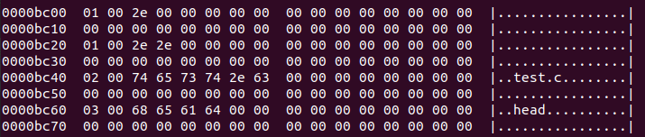
第一行：
2e：点号.第三行：两个点号
..第五行：
字节值 ASCII字符 含义 74t字母 t65e字母 e73s字母 s74t字母 t2e.字母 .63c字母 c第七行：
字节值 ASCII字符 含义 68h字母 h65e字母 e61a字母 a64d字母 d
第二个：
1
00001020 a4 81 00 00 0c 00 00 00 8c 7f 7f 68 00 01 30 00 |...........h..0.|
变量 内存字节 十六进制值 含义 i_mode81 a40x81a4权限 rw-rw-r--（普通文件）i_uid00 000x0000所属用户 rooti_size0c 00 00 000x0000000c文件大小 12 字节i_time8c 7f 7f 680x687f7f8c时间戳（需转换为可读时间） i_gid000x00所属用户组 rooti_nlinks010x01引用计数 i_zone[9]30 000x0030数据块位置 48我们查看第48块数据块，内容如下：
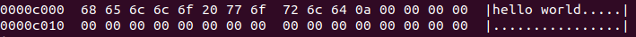
根据内容我们可以知道
字节值 ASCII字符 含义 68h字母 h65e字母 e6cl字母 l6cl字母 l6fo字母 o20`` 空格 77w字母 w6fo字母 o72r字母 r6cl字母 l64d字母 d0a\n换行符（Line Feed） 00\0空字符（Null Terminator） 00\0空字符 00\0空字符 00\0空字符 略
d-bitmap
d-bmap (Data Block Bitmap - 数据块位图):
作用： 一个简单的位数组（bit array），每个比特(bit)对应文件系统中的一个数据块。
- 比特值
0表示对应的数据块是空闲的。 - 比特值
1表示对应的数据块已被使用（存储了文件/目录数据或间接块指针）。
- 比特值
特点： 文件系统需要为文件分配存储空间时，快速扫描此位图寻找连续或分散的空闲数据块。高效管理磁盘空间分配状态。
磁盘格式化后的
d-bmap内容如下：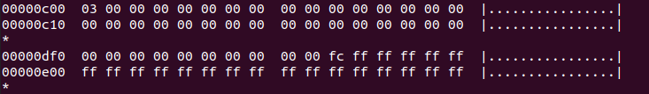
实验的4MB大小的磁盘格式化后，一共4096个block，每个block大小为1KB。
格式化之后显示首个数据区为47，因为前面的引导块、超级块、inode_table、i-bmap、d-bmap占据了0~46总共47个block,所以还剩下的data block数量为4049个。
bitmap中需要4049个bit位来表示这些block的使用情况。我们从d-bmap内容可以知道从0xc00到0xdf9一共有506个字节，加上0xdfa上的数据0xfc的2个bit位，再减去起始位置的一个bit位，一共是4049位。
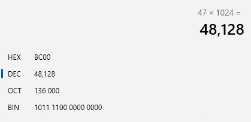
通过计算知道第一个数据块的起始地址为0xbc00，我们找到第一个数据块，内容如下：
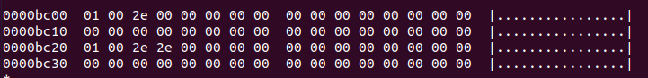
第一个数据块的数据，其实是根目录的数据区，格式化后的文件系统里面什么都没有，但是会有一个根目录。目录项在文件系统中也是一个文件，也会用唯一的inode来标识
目录文件
文件目录的本质是一个文件，有自己的inode，在inode中将该文件类型标记为”目录“，和普通文件不同的是，普通文件的块里面保存的是文件数据，而目录文件的块里面保存的是目录里面一项一项的文件信息。
在目录文件的块中，最简单的保存格式就是列表，就是一项一项地将目录下的文件信息（如文件名、文件inode、文件类型等)列在表里。列表中每一项就代表该目录下的文件的文件名和对应的inode,通过这个inode,就可以找到真正的文件。

通常，第一项是.，表示当前目录，第二项是..，表示上一级目录，接下来就是一项一项的文件名和inode.
如果一个目录有超级多的文件，我们要想在这个目录下找文件，按照列表一项一项的找，效率就不高了。于是，保存目录的格式改成哈希表，对文件名进行哈希计算，把哈希值保存起来，如果我们要查找一个目录下面的文件名，可以通过名称取哈希。
如果哈希能够匹配上，就说明这个文件的信息在相应的块里面。Linux系统的ext2文件系统就是采用了哈希表，来保存目录的内容，这种方法的优点是查找非常速，插入和删除也较简单。目录查询是通过在磁盘上反复搜索完成，需要不断地进行I/O操作，开销较大。所以，为了减少I/O操作，把当前使用的文件目录缓存在内存，以后要使用该文件时只要在内存中操作，从而降低了磁盘操作次数，提高了文件系统的访问速度。
文件目录项entry数据结构
minix文件系统
1 | struct minix_dir_entry { |
结构体变量：
- 固定部分（2字节）：
inode字段 - 可变部分：
name字段存储在inode之后的内存空间 - 无长度字段：依赖特殊规则确定文件名长度（如遇空字符终止）
ext2/ext3文件系统
1 | struct ext2_dir_entry_2 { |
各字段详解：
__u32 inode- 作用：存储该目录项对应的 inode 编号
- 意义：通过此编号可在 inode 表中找到文件元数据和数据块位置
- 特点：32 位支持更多文件（Minix 仅 16 位）
__u16 rec_len- 作用：记录 整个目录项占用的字节数（包括填充字节）
- 意义：
- 用于遍历目录：
下一个条目地址 = 当前地址 + rec_len - 删除文件时：扩展前一项的
rec_len覆盖被删项（避免碎片）
- 用于遍历目录：
- 特点：长度按 4 字节对齐（提高访问效率）
__u8 name_len- 作用：存储 文件名的实际长度（单位：字节）
- 意义：动态确定文件名边界（支持最长 255 字符）
- 示例：文件名
a.txt→name_len = 6
__u8 file_type作用：标识 文件类型，避免查询 inode
常见值：
c
1
2
3
4
5
6
7
8
char name[]- 作用：存储 文件名（变长数组，不以
\0结尾） - 特点：
- 实际占用空间 =
name_len字节 - 与后续字段间可能有填充字节（满足 4 字节对齐）
- 实际占用空间 =
- 作用：存储 文件名（变长数组，不以
文件查找流程
我们实验使用minix文件系统，我们查找文件/head/head.h，流程如下：
1 | 00000000 00 00 00 00 00 00 00 00 00 00 00 00 00 00 00 00 |................| |
首先解析/根目录，我们在inode table中找到根目录的内容：
1 | 00001000 ed 41 00 00 80 00 00 00 a1 7f 7f 68 00 03 2f 00 |.A.........h../.| |
我们对内容进行分析可以得知
| 字段 | 原始字节 | 小端值 | 含义 |
|---|---|---|---|
| i_mode | ed 41 |
0x41ed |
目录文件，权限 rwxr-xr-x |
| i_uid | 00 00 |
0x0000 |
所属用户：root (UID=0) |
| i_size | 80 00 00 00 |
0x00000080 |
大小：128 字节 |
| i_time | a1 7f 7f 68 |
0x687f7fa1 |
时间戳：2025-09-28 08:30:41 |
| i_gid | 00 |
0x00 |
所属组：root (GID=0) |
| i_nlinks | 03 |
0x03 |
硬链接数：3 |
| i_zone[9] | 2f 00 |
0x002f |
数据块位置：47 |
可以知道根目录的纯数据存放在47的数据块中，我们找到47*1024=0xbc00，数据块中的内容为：
1 | 0000bc00 01 00 2e 00 00 00 00 00 00 00 00 00 00 00 00 00 |................| |
这个数据块保存的是目录文件的内容，根据结构体struct minix_dir_entry可以得知每行的内容结构为inode+name，当我们找到了/之后，进一步查找内容head，我们根据内容可以知道head存储在如下的地址：
1 | 0000bc60 03 00 68 65 61 64 00 00 00 00 00 00 00 00 00 00 |..head..........| |
可以知道head的inode为3，因此我们可以知道head在inode table中条目的顺序为3，我们返回inode table的内容中，看到内容为：
1 | 00001000 ed 41 00 00 80 00 00 00 a1 7f 7f 68 00 03 2f 00 |.A.........h../.| |
inode为1的时候地址为0x00001000，因此我们可以通过计算得知head的inode信息存放在0x00001000+sizeof(struct minix_inode)*(3-1)=0x00001040，于是我们在地址0x00001040中可以找到head的inode信息为：
1 | 00001040 ed 41 00 00 60 00 00 00 b0 7f 7f 68 00 02 31 00 |.A..`......h..1.| |
我们对内容进行分析可以得知
| 字段 | 原始字节 | 小端值 | 解析结果 |
|---|---|---|---|
| i_mode | ed 41 |
0x41ed |
目录文件，权限 rwxr-xr-x |
| i_uid | 00 00 |
0x0000 |
root 用户 (UID=0) |
| i_size | 60 00 00 00 |
0x00000060 |
文件大小：96 字节 |
| i_time | b0 7f 7f 68 |
0x687f7fb0 |
时间戳：2025-09-28 08:30:40 |
| i_gid | 00 |
0x00 |
root 组 (GID=0) |
| i_nlinks | 02 |
0x02 |
硬链接数：2 |
| i_zone[0] | 31 00 |
0x0031 |
数据块位置：49 |
我们找到49的数据块位置，内容为下：
1 | 0000c400 03 00 2e 00 00 00 00 00 00 00 00 00 00 00 00 00 |................| |
同理我们知道head.h在inode table中条目的顺序为4，内容如下：
1 | 00001060 a4 81 00 00 0d 00 00 00 c4 7f 7f 68 00 01 32 00 |...........h..2.| |
分析内容：
| 字段 | 原始字节 | 小端值 | 解析结果 |
|---|---|---|---|
| i_mode | a4 81 |
0x81a4 |
普通文件，权限 rw-r--r-- |
| i_uid | 00 00 |
0x0000 |
root 用户 (UID=0) |
| i_size | 0d 00 00 00 |
0x0000000d |
文件大小：13 字节 |
| i_time | c4 7f 7f 68 |
0x687f7fc4 |
时间戳：2025-09-28 08:30:44 |
| i_gid | 00 |
0x00 |
root 组 (GID=0) |
| i_nlinks | 01 |
0x01 |
硬链接数：1 |
| i_zone[0] | 32 00 |
0x0032 |
数据块位置：50 |
因此我们就可以找到/head/head.h文件的纯数据就保存在50的数据块中，内容如下：
1 | 0000c800 68 65 61 64 68 65 61 64 68 65 61 64 0a 00 00 00 |headheadhead....| |
硬链接与软链接
| 特性 | 硬链接（Hard Link） | 软链接（Symbolic Link） |
|---|---|---|
| 本质 | 多个目录项指向同一个 inode | 特殊文件，内容存储目标文件的路径 |
| inode 关系 | 共享相同 inode | 拥有独立 inode |
| 跨文件系统 | ❌ 不支持 | ✅ 支持 |
| 原始文件删除 | 不影响硬链接访问（inode 引用计数减1） 只有删除文件的所有硬链接以及源文件时，系统才会彻底删除该文件。 |
导致链接失效（”断链”） |
| 文件类型 | 与原文件相同 | 固定为符号链接类型（l） |
| 命令示例 | ln source.txt hardlink.txt |
ln -s source.txt softlink.txt |
硬链接是 inode 的别名，软链接是路径的快捷方式。
我们在实验中使用的Minix系统，minix_inode结构体中的__u8 i_nlinks，这个变量就表示这个文件的硬链接
目录文件的硬链接有以下部分组成：
- 自身引用：目录自身的
.条目。 - 子目录引用：至少有一个子目录的
..指向它。
每增加一个子目录，父目录的硬链接数+1


例子：
我们实验中磁盘的树结构为：
1 | root@xnj-virtual-machine:/mnt# tree |
按照理论来讲/根目录的硬链接数为3，因为本身的条目.与..都指向自己，其下还有一个子目录head中的..也指向它。那么我们来查看实际是否是这样的呢？我们在inode章节的分析可以验证理论是正确的！
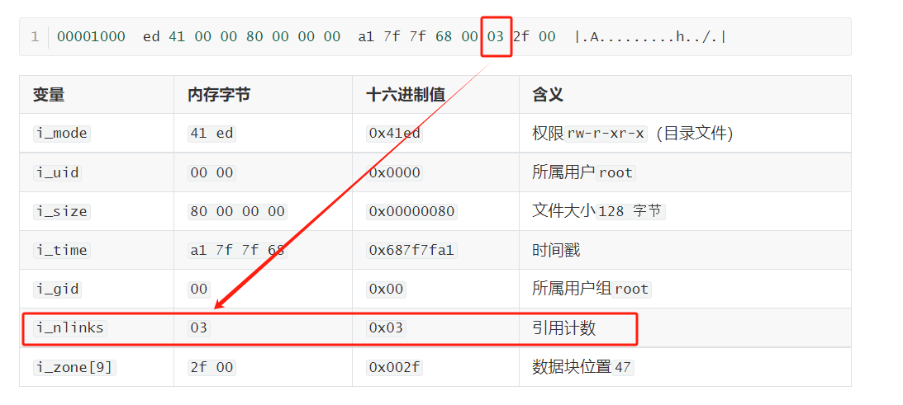
大小端存储
大小端存储（Endianness） 是指多字节数据类型（如整数、浮点数等）在内存中的存储方式。它决定了数据的高字节（Most Significant Byte, MSB）和低字节（Least Significant Byte, LSB）在内存中的排列顺序。这一概念对数据的跨平台兼容性、网络通信以及编程实践至关重要。
大小端的定义
大端序（Big-Endian）
高字节（MSB）存储在内存的低地址，低字节（LSB）存储在高地址。
示例：
一个 32 位整数
0x12345678在大端序中的内存布局为：1
2
3
4地址 0: 0x12（MSB）
地址 1: 0x34
地址 2: 0x56
地址 3: 0x78（LSB）小端序（Little-Endian）
低字节（LSB）存储在内存的低地址，高字节（MSB）存储在高地址。
示例：
同一整数
0x12345678在小端序中的内存布局为：1
2
3
4地址 0: 0x78（LSB）
地址 1: 0x56
地址 2: 0x34
地址 3: 0x12（MSB）
如何检测系统的字节序？
可以通过一段简单的代码判断系统是大端还是小端：
1 |
|
输出：
- 在 x86（小端）系统上会输出
Little-Endian。 - 在 ARM（可配置）或网络协议（强制大端）上可能输出
Big-Endian。